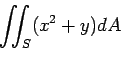
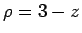
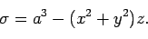
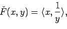
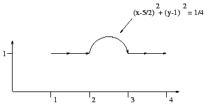

.

(a) Set up but do not evaluate the first moment Mxy in
spherical
coordinates.
(b) Set up but do not evaluate the first moment Mxy in
cylindrical
coordinates.
(a) Set up but do not evaluate the first moment Mxy in
rectangular
coordinates.

